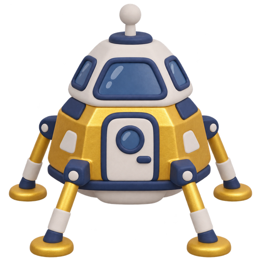

망원경으로 달을 관찰하고, 달의 모양과 표면 모습을 알아봐요.
밤하늘의 달을 망원경으로 가까이 보면 어떤 모습일까요? 내 생각과 가장 가까운 것을 골라요.
좋아요. 예상이 맞는지 망원경으로 직접 확인해 봐요.
빈칸을 누르고, 아래 낱말에서 알맞은 것을 골라요.
달의 바다에는 실제로 물이 없어요. 그런데 왜 '바다'라고 부를까요?
예시 주변보다 어둡고 매끈매끈하게 보여서 바다처럼 보이기 때문이에요. / 어두운 곳에 물이 차 있을 것이라고 생각했기 때문이에요.
하고 싶은 활동을 골라요. 하지 않고 마무리해도 괜찮아요.
달 표면 모형의 하늘을 눌러 돌을 떨어뜨려 봐요. (3번)
달 표면의 움푹 파인 곳을 왜 '충돌 구덩이'라고 부를까요?
예시 돌이 달 표면에 부딪쳐서(충돌해서) 생긴 구덩이이기 때문이에요.